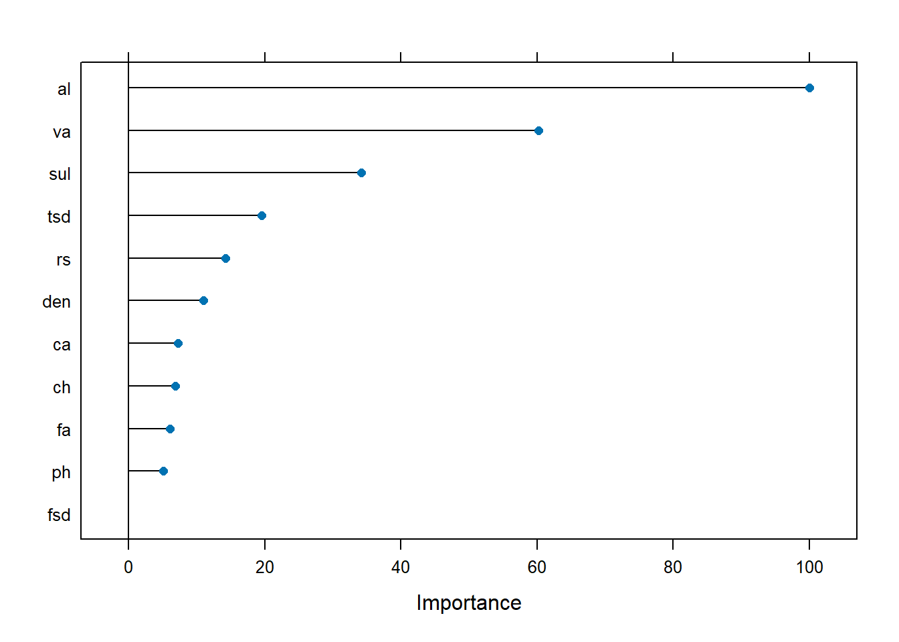
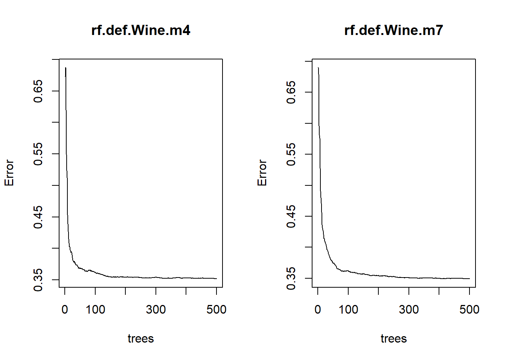

Chapter 6 Workflow Demonstration
In this section, we use a dataset to exemplify a typical workflow for constructing ML models. We skip exploratory data analysis, since we have already addressed that aspect in Data. The dataset contains wine quality and traits, and our goal is to predict the quality of wine using the traits. The dataset can be found here.
knitr::opts_chunk$set(echo = TRUE, eval = TRUE, cache = TRUE)
library(tree)
library(tidyverse)
library(caret)
library(rattle)
library(randomForest)6.1 Prepare Data
We first read in the data and rename the variables, so coding is easier.
## Rows: 1599 Columns: 12
## ── Column specification ────────────────────────────────────────────────────────
## Delimiter: ";"
## dbl (12): fixed acidity, volatile acidity, citric acid, residual sugar, chlo...
##
## ℹ Use `spec()` to retrieve the full column specification for this data.
## ℹ Specify the column types or set `show_col_types = FALSE` to quiet this message.# shorten variable names
fa <- wine$`fixed acidity`
va <- as.numeric(wine$`volatile acidity`)
ca <- as.numeric(wine$`citric acid`)
rs <- wine$`residual sugar`
ch <- as.numeric(wine$chlorides)
fsd <- wine$`free sulfur dioxide`
tsd <- wine$`total sulfur dioxide`
den <- as.numeric(wine$density)
ph <- wine$pH
sul <- as.numeric(wine$sulphates)
al <- wine$alcohol
qual <- wine$quality
winez <- data.frame(fa, va, ca, rs, ch, fsd, tsd, den, ph, sul, al, qual)To demonstrate how to construct Random Forests models with continuous and discrete outcomes, we also transform the continuous variable, wine quality, our response variable, into two discrete variables. One has two levels: high vs low, and one has three levels: H, M, and L. The thresholds are decided rather arbitrarily, and you can use your domain knowledge to gauge how to set the thresholds.
# collapse qual into 2 labels
winez$qual2 <- as.factor(ifelse(winez$qual < 6, "low", "high"))
# collapse qual into 3 labels
winez$qual3 <- as.factor(ifelse(winez$qual < 5, "L", ifelse(winez$qual < 7, "M", "H")))
table(qual)## qual
## 3 4 5 6 7 8
## 10 53 681 638 199 18##
## high low
## 855 744##
## H L M
## 217 63 1319Next we randomly separate the dataset into a training set (80% of the rows) and a testing set (20% of the rows). A seed is set so that the result can be reproduced.
6.2 Classification Models
Now we construct a Random Forests model with the two-level response. After the model is run, we calculate the predictions using the predict function. A plot for the important predictors are provided. We can see that alcohol, sulphates, and volatile acidity are three most important predictors for the outcome variable. A confusion matrix is created, which shows different metrics such as overall accuracy rate, sensitivity, specificity, etc.
# random forest
rfGrid <- expand.grid(mtry = 2:8)
# 2-level variable
rf_tree2 <- train(qual2 ~ fa + va + ca + rs + ch + fsd + tsd + den + ph + sul + al, data = winez_train, method = "rf", preProcess = c("center", "scale"), trControl = trainControl(method = "cv", number = 10), tuneGrid = rfGrid)
rf2_pred <- predict(rf_tree2, newdata = winez_test)
rfMatrix2 <- table(rf2_pred, winez_test$qual2)
rf2_test <- mean(rf2_pred == winez_test$qual2)
plot(varImp(rf_tree2))
## Confusion Matrix and Statistics
##
## Reference
## Prediction high low
## high 138 25
## low 45 112
##
## Accuracy : 0.7812
## 95% CI : (0.7319, 0.8253)
## No Information Rate : 0.5719
## P-Value [Acc > NIR] : 2.968e-15
##
## Kappa : 0.5613
##
## Mcnemar's Test P-Value : 0.02315
##
## Sensitivity : 0.7541
## Specificity : 0.8175
## Pos Pred Value : 0.8466
## Neg Pred Value : 0.7134
## Prevalence : 0.5719
## Detection Rate : 0.4313
## Detection Prevalence : 0.5094
## Balanced Accuracy : 0.7858
##
## 'Positive' Class : high
## Next we create a model with the three-level outcome variable. Again, important predictors are plotted and a confusion matrix is included below. alcohol, volatile acidity, and sulphates are again the three most important predictors, but the order changed. The overall accuracy is higher here than the two-level model.
# 3-level variable
rf_tree3 <- train(qual3 ~ fa + va + ca + rs + ch + fsd + tsd + den + ph + sul + al, data = winez_train, method = "rf", preProcess = c("center", "scale"), trControl = trainControl(method = "cv", number = 10), tuneGrid = rfGrid)
rf3_pred <- predict(rf_tree3, newdata = winez_test)
rfMatrix3 <- table(rf3_pred, winez_test$qual3)
rf3_test <- mean(rf3_pred == winez_test$qual3)
plot(varImp(rf_tree3))
## Confusion Matrix and Statistics
##
## Reference
## Prediction H L M
## H 25 0 5
## L 0 0 1
## M 18 8 263
##
## Overall Statistics
##
## Accuracy : 0.9
## 95% CI : (0.8618, 0.9306)
## No Information Rate : 0.8406
## P-Value [Acc > NIR] : 0.001473
##
## Kappa : 0.5617
##
## Mcnemar's Test P-Value : NA
##
## Statistics by Class:
##
## Class: H Class: L Class: M
## Sensitivity 0.58140 0.000000 0.9777
## Specificity 0.98195 0.996795 0.4902
## Pos Pred Value 0.83333 0.000000 0.9100
## Neg Pred Value 0.93793 0.974922 0.8065
## Prevalence 0.13437 0.025000 0.8406
## Detection Rate 0.07812 0.000000 0.8219
## Detection Prevalence 0.09375 0.003125 0.9031
## Balanced Accuracy 0.78167 0.498397 0.7339The plot below shows how the accuracy rate changes with the number of randomly selected variables in each tree (denoted as \(m\)).
# random forest plot: accuracy rates vs number of predictors
rfplot1 <- plot(rf_tree2)
rfplot2 <- plot(rf_tree3)
gridExtra::grid.arrange(rfplot1, rfplot2, nrow = 1, ncol = 2)Figure 6.1: Accuracy Rates vs Number of Predictors Used for 2-level Variable (left) and 3-level Variable (right)
6.3 Prediction Models
Next we construct Random Forests models with the continuous outcome variable. We first set \(m\) as the square root of the number of predictors, as this is commonly recommended. Confusion matrices cannot be provided for continuous responses, but we can calculate MSEs, find important variables, and show how the error decreases with the number of trees constructed. The three most important variables are again alcohol, sulphates, and volatile acidity.
# randomforests, mtry = sqrt(11)
rf.def.Wine <- randomForest(qual ~ fa + va + ca + rs + ch + fsd + tsd + den + ph + sul + al, data = winez_train, importance = TRUE)
yhat.rf.Wine <- predict(rf.def.Wine, newdata = winez_test)
rf.mtry3.testMSE <- mean((yhat.rf.Wine - winez_test$qual)^2)
varImp(rf.def.Wine)## Overall
## fa 22.11429
## va 37.04878
## ca 23.74687
## rs 18.55913
## ch 24.96786
## fsd 21.65164
## tsd 32.28444
## den 27.19701
## ph 22.36903
## sul 43.52900
## al 54.53284
We try several different numbers for the number of variable included in each tree. alcohol, sulphates, and volatile acidity remain the three most important predictors. Two plots are provided to show how the error decreases with the number of trees.
# mtry = 4
rf.def.Wine.m4 <- randomForest(qual ~ fa + va + ca + rs + ch + fsd + tsd + den + ph + sul + al, data = winez_train, mtry = 4, importance = TRUE)
rf.pred.m4 <- predict(rf.def.Wine.m4, newdata = winez_test)
rf.mtry4.testMSE <- mean((rf.pred.m4 - winez_test$qual)^2)
varImp(rf.def.Wine.m4)## Overall
## fa 22.78226
## va 39.40868
## ca 22.22551
## rs 16.27685
## ch 25.12775
## fsd 21.58168
## tsd 30.36789
## den 27.20655
## ph 20.22223
## sul 47.59070
## al 60.54909# mtry = 7
rf.def.Wine.m7 <- randomForest(qual ~ fa + va + ca + rs + ch + fsd + tsd + den + ph + sul + al, data = winez_train, mtry = 7, importance = TRUE)
rf.pred.m7 <- predict(rf.def.Wine.m7, newdata = winez_test)
rf.mtry7.testMSE <- mean((rf.pred.m7 - winez_test$qual)^2)
varImp(rf.def.Wine.m7)## Overall
## fa 22.31197
## va 43.85162
## ca 22.34412
## rs 15.79913
## ch 26.89172
## fsd 22.86225
## tsd 35.73985
## den 28.37794
## ph 24.39275
## sul 55.85386
## al 71.99840
Lastly, we put the MSEs from these models together. The differences are very small, but the model that uses \(m=\sqrt{p}\) has a slightly lower MSE.
res <- data.frame(rf.mtry3.testMSE, rf.mtry4.testMSE, rf.mtry7.testMSE)
colnames(res) <- c("squre root of p", "4", "7")
rownames(res) <- c("MSE")
knitr::kable(res)| squre root of p | 4 | 7 | |
|---|---|---|---|
| MSE | 0.289515 | 0.2907887 | 0.292777 |